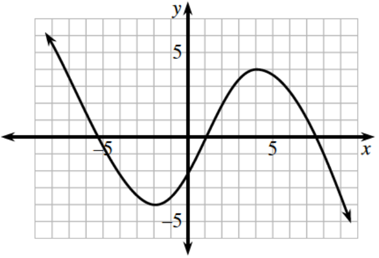
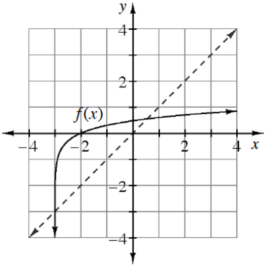
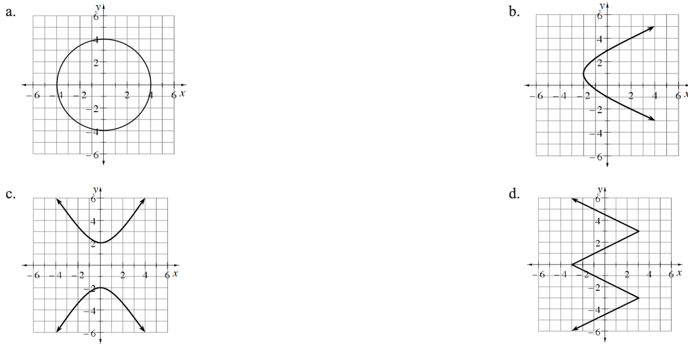

.figure-full image option. Homework Help text omitted. Figure filenames now use hyphens. Code comments included for easier editing.How many solutions does the equation \(\sin(x)=2\) have? Explain.
Solve each of the following equations over the given domains.
\(\cos(x)=-\frac{\sqrt{2}}{2}\) for all \(x\)
\(2\cos(x)=1\) for all \(x\)
\(\sin(x)+1=0\) for \(0\le x<2\pi\)
\(2\sin(x)-\sqrt{3}=0\) for \(0\le x<2\pi\)
Algebraically solve each of the following equations for all \(x\). Write your answers as concisely as possible. Verify your solutions with a graphing calculator.
\(4\sin^2(x)-3=0\)
\(\sin(x)\cos(x)=0\)
\(\frac{\cos(x)+1}{\sin(x)}=0\)
\(\tan(x)(2\cos(x)+1)=0\)
State all values of \(0\leθ<2\pi\) that satisfy each of the following equations. Sketching a unit circle will help.
\(\sin(θ)=\frac{1}{2}\)
\(\cos(θ)=−\frac{1}{2}\)
\(\sin(θ)=−\frac{\sqrt{3}}{2}\)
\(\cos(θ)=0\)
For each angle (in radians) listed below, determine the signs of the coordinates in a unit circle.
\(\frac { 4 \pi } { 7 }\)
\(-\frac{3\pi}{5}\)
\(\frac { 37 \pi } { 9 }\)
\(−21\pi\)
Graph two complete cycles of each of the following functions
\(f(x)=\sin(2x)-5\)
\(g(x)=4\cos\left(x+\frac{\pi}{3}\right)\)
Use the graph at right, state the intervals where the function is increasing, decreasing, concave up, and concave down, as well as the locations of any maxima or minima

The graph of a function is sketched at right. Sketch the graph of the inverse. State the domain and range for the function and its inverse. The dotted line is \(y=x\).

As the connected complexity of mathematical concepts evolve, your mathematical knowledge evolves as well. Previous knowledge provides the necessary skills to acquire new learning. If necessary, review the Simplifying and Combining Radicals Skill Builder, to strengthen your understanding of this topic.
Simplify each of the following radical expressions.
\(\sqrt{12}+\sqrt{\frac{3}{4}}-\sqrt{27}\)
\(( 2 \sqrt { b } - \sqrt { a } ) ( \sqrt { b } + 3 \sqrt { a } )\)
\(( \sqrt { 2 } - \sqrt { 3 } ) ^ { 2 }\)
\(\sqrt [ 4 ] { x ^ { 4 } y ^ { 9 } }\)
Algebraically determine if each of the following functions is even, odd, or neither. Verify your answers graphically.
\(f(x)=3x^2+5x-1\)
\(g(x)=\frac{3}{x^2}+5x^4-1\)
Each of the curves graphed below is not a function. However, restricting the domain or range can turn a non-function into a function. Sketch a copy of each graph below onto your paper. Then highlight the largest portion of each curve that represents a function. In each case, did you restrict the domain or did you restrict the range?
